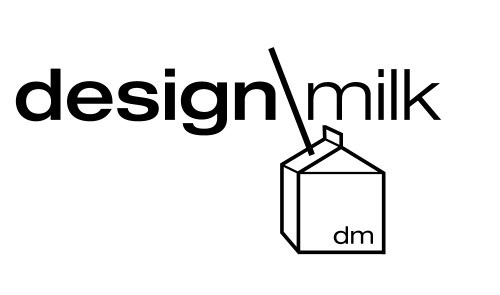
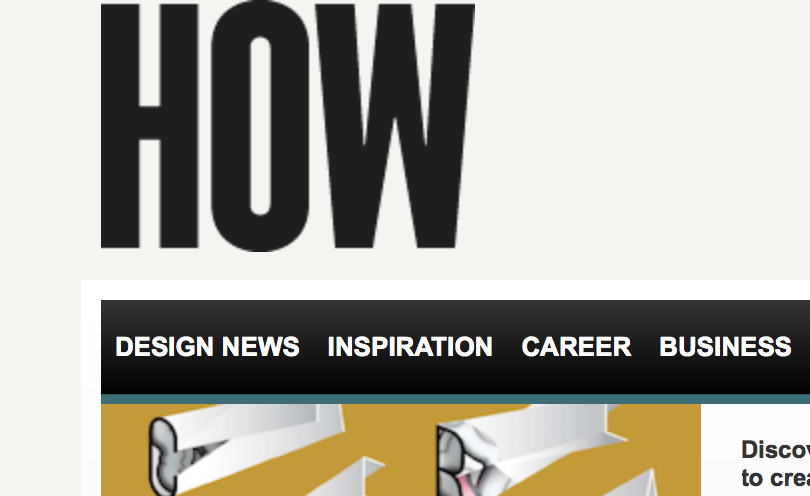

Website Comparison
A Succesful Website
A website that I have found very succesful is a design blog called designmilk.com. It is succesful because it allows the user to navigate seamlessly within it. The inital page has two headers, a small one for basic and accesible information, and a larger one that serves as a menu that branches out the whole website. Since the website concerns design, the main header devides diferent topics such as architecture, art, style, tech, etc. Nonetheless, the search panel is accesible even if you are not in the home page -which makes it easy to look things up. Furthermore, being that social media is so colossal right now, the social media icons like Facebook, Twitter, and Instagram are noticeable and easy to click on without having to leave the website itself. In terms of layout, the website has an interesting way of diving information and images because as you scroll down the page you can tell how grids change, and arrangement of information is not all in one format. Lastly, since this website is a design blog it is very up to date in terms of information and all of its graphics are in excellent condition. The only thing I can't say about this website is that it is the cleanest, but since it is a blog it is bound to be charged with information and/or advertisiments; However it's use of layout makes it pleasing to navigate through.
A Less Succesful Website
A website that I found less succesful was howdesign.com. How design is also a design blog yet it is more complicated in terms of usability. Like design milk it has two headers that lead to other pages within the site; however some of them take you out of the website instead of opening up in a new tab and/or are not easy to go back to the home page. Nontheless, the website has a very basic and cluttered layout that could be arranged in a more intruiging and still simple way. In regards to information, the website is somewhat updated but not as constantly as Design Milk. Although How Design is a very complete website, it lacks user friendliness as well as tweaking in terms of design. For instance the submit button in the email subscription box has layered text and you have to assume it says submit. Lastly, this is not a website that I would remember or intend to go back to unless I would need specific information from it.
